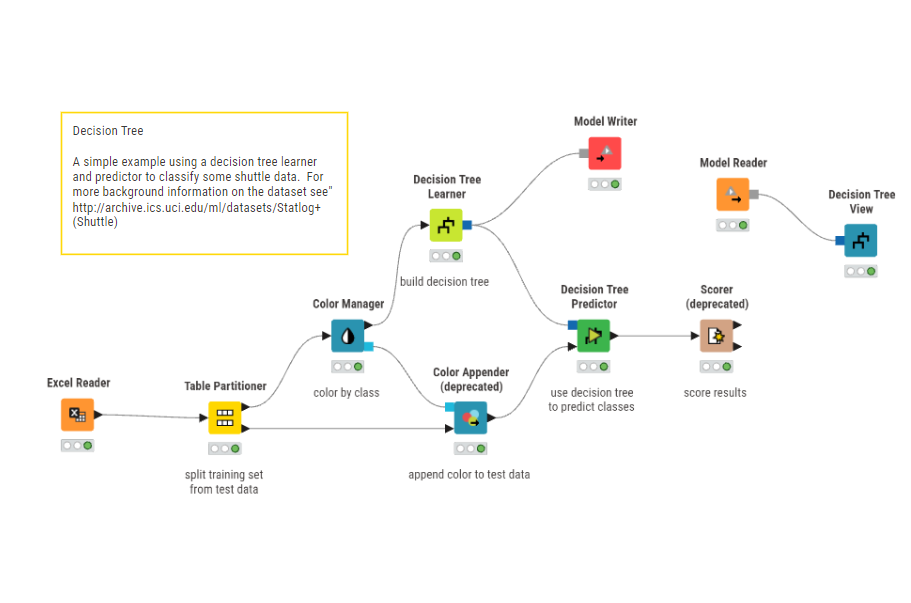
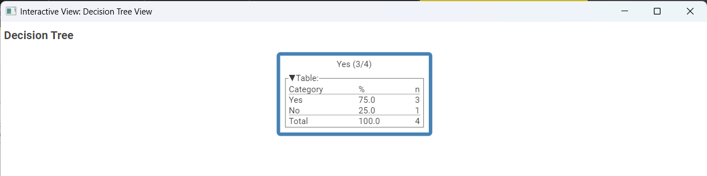

Desicion Tree Learning#
Memahami Decision Tree Learning dan Fungsinya#
Apa itu Decision Tree Learning?#
http://googleusercontent.com/image_content/259
Decision Tree Learning (Pembelajaran Pohon Keputusan) adalah salah satu algoritma Machine Learning berjenis Supervised Learning (pembelajaran terarah) yang sangat populer. Algoritma ini memodelkan keputusan beserta kemungkinan akibatnya menjadi sebuah struktur grafik berbentuk pohon.
Cara kerjanya mirip dengan alur berpikir rasional manusia saat mengambil keputusan. Algoritma ini memecah dataset menjadi kelompok-kelompok yang lebih kecil secara terus-menerus berdasarkan aturan logika “Jika… Maka…” (If-Then).
Struktur dari Decision Tree terdiri dari tiga elemen utama:
Root Node (Simpul Akar): Titik awal di paling atas yang mewakili seluruh dataset. Ini adalah atribut pengujian pertama yang paling penting.
Internal Node (Simpul Cabang): Titik pengujian atribut lanjutan. Setiap cabang mewakili hasil dari uji tersebut (misal: Jika cuaca = Hujan, maka lari ke cabang A).
Leaf Node (Simpul Daun): Titik akhir dari pohon yang tidak bercabang lagi. Node ini menyimpan hasil akhir klasifikasi atau prediksi (misal: Keputusan final = Yes atau No).
Fungsi Utama Decision Tree Learning#
Secara konsep keilmuan Data Science, algoritma ini memiliki fungsi-fungsi vital berikut:
Klasifikasi dan Regresi: Berfungsi untuk mengategorikan data ke dalam kelas diskrit (misal: Spam / Bukan Spam, Sakit / Sehat) atau memprediksi nilai kontinu (regresi numerik).
Menemukan Atribut Paling Signifikan (Feature Selection): Algoritma ini secara otomatis menyeleksi faktor atau atribut mana yang paling menentukan hasil akhir melalui perhitungan matematis (seperti Information Gain atau Gini Index).
Transparansi Model (White-Box): Tidak seperti algoritma rumit (misalnya Neural Networks), fungsi unggulan Decision Tree adalah modelnya sangat mudah divisualisasikan, dibaca, dan dipahami logika bisnisnya oleh manusia awam sekalipun.
Fungsi Node “Decision Tree Learner” pada KNIME#
Dalam ekosistem aplikasi KNIME (seperti pada workflow pembuatan model), node Decision Tree Learner bertindak secara spesifik sebagai “Otak Pembelajar”.
Berikut adalah rincian fungsionalitas dari node tersebut:
Menerima Data Latih (Training Data): Node ini membaca data historis yang masuk dari port input-nya. Data ini harus sudah memiliki target/“kunci jawaban” (kolom klasifikasi).
Melakukan Kalkulasi Matematis: Node bekerja di balik layar menghitung Entropy dan probabilitas masing-masing variabel untuk mencari tahu batas pembagian data yang paling murni.
Melakukan Pembelahan (Splitting): Menentukan kolom mana yang menjadi Root, lalu membuat cabang-cabangnya hingga mencapai kesimpulan akhir di bagian daun (Leaf).
Mengekspor Objek Model: Output dari node ini (melalui port keluaran berwarna biru) bukanlah sebuah tabel data, melainkan sebuah Objek Model (kumpulan aturan logika atau “rules”). Model inilah yang nantinya diserahkan ke node Predictor untuk menebak data di masa depan, atau diteruskan ke Model Writer untuk disimpan.
Panduan Pembuatan Model Decision Tree di KNIME#

Dokumentasi ini berisi penjelasan dan langkah-langkah untuk membangun alur kerja (workflow) Machine Learning menggunakan algoritma Decision Tree pada KNIME Analytics Platform.
Alur Workflow#
Excel Reader
↓
Table Partitioner
↓
Decision Tree Learner
↓
(Model Writer) ← [Simpan Model]
↓
Decision Tree Predictor
↓
Color Appender
↓
Scorer (deprecated)
↓
Decision Tree View
↓
[Model Reader + View] ← [Baca & Tampilkan Model]
Penjelasan Per Node#
1. Excel Reader 🟠#
Fungsi: Membaca data dari file Excel
Apa yang dilakukan:#
Membuka file
Play_Tennis_Dataset.xlsxMembaca semua baris dan kolom
Mengkonversi data ke format tabel yang dapat diproses
Output:#
Tabel dengan 14 rows × 6 columns:
[Day, Outlook, Temp., Humidity, Wind, Play Tennis]
Contoh Data:#
D1 | Sunny | Hot | High | False | No
D2 | Sunny | Hot | High | True | No
D3 | Overcast | Hot | High | False | Yes
...
2. Table Partitioner 📊#
Fungsi: Memisahkan data menjadi training set dan test set
Apa yang dilakukan:#
Membagi dataset menjadi dua bagian:
Training Set (80%): Digunakan untuk membangun model
Test Set (20%): Digunakan untuk evaluasi model
Proportions:#
Total Data: 14 records
├── Training Set: ~11 records (78.6%)
└── Test Set: ~3 records (21.4%)
Output:#
Training Data → Ke Decision Tree Learner
Test Data → Disimpan untuk nanti digunakan Color Appender
3. Decision Tree Learner 🟢#
Fungsi: Membangun model decision tree menggunakan training data
Apa yang dilakukan:#
Analisis Information Gain untuk setiap fitur:
Hitung entropy awal
Hitung weighted entropy setelah split
Pilih fitur dengan information gain tertinggi
Recursive Splitting:
Bagi data berdasarkan fitur terpilih
Ulangi proses untuk setiap subset hingga:
Semua data dalam node memiliki label yang sama
Atau kedalaman maksimal tercapai
Ilustrasi Proses Decision Tree:#
[All 14 records]
9 Yes, 5 No
|
| Split by OUTLOOK (Information Gain terbesar)
|
______________|______________
/ | \
SUNNY OVERCAST RAIN
(5 records) (4 records) (5 records)
2 Yes,3 No 4 Yes, 0 No 3 Yes, 2 No
| | |
| [PURE → YES] | Split by WIND
| |
Split by ____________|____________
HUMIDITY / \
| WIND=False WIND=True
______|_____ (3 records) (2 records)
/ \ 3 Yes, 0 No 1 Yes, 1 No
HIGH NORMAL [PURE → YES] |
(3 Yes, (2 Yes, Split by HUMIDITY
1 No) 2 No) |
| | ________|________
| Split by / \
| TEMP HIGH NORMAL
| | (1 Yes, 1 No) (0 Yes, 1 No)
| ___|___ | |
| / \ [LEAF → ?] [LEAF → NO]
... ... ...
Output:#
Decision Tree Model: Pohon dengan keputusan berdasarkan split criteria
Struktur tree disimpan dalam format yang dapat digunakan untuk prediksi
4. Model Writer 💾#
Fungsi: Menyimpan model decision tree ke file
Apa yang dilakukan:#
Serialisasi model decision tree
Simpan ke file format (misal:
.model,.pkl, atau format proprietary)Memungkinkan model digunakan kembali tanpa perlu training ulang
File Output:#
decision_tree_model.model
├── Tree Structure
├── Split Rules
└── Leaf Classifications
5. Decision Tree Predictor 🟢#
Fungsi: Menggunakan model tree untuk memprediksi test set
Apa yang dilakukan:#
Ambil setiap record dari test set
Traversal tree dari root ke leaf:
Di setiap node, cek kondisi fitur
Pilih branch yang sesuai
Lanjut ke node child
Ketika mencapai leaf → return prediksi
Contoh Prediksi:#
Input Test Record: [Sunny, Cool, High, False, ?]
Traversal:
├─ Root: Outlook = Sunny? ✓ → Go Left
├─ Node: Humidity = High? ✓ → Go to Leaf
└─ LEAF → Predict: NO
Predicted: NO
Output:#
Predicted Labels untuk setiap test record
Dikirim ke Color Appender
6. Color Appender (deprecated) 🔵#
Fungsi: Menambahkan warna ke data berdasarkan hasil prediksi
Apa yang dilakukan:#
Bandingkan prediksi dengan nilai sebenarnya
Tambahkan color attribute:
🟢 Green: Prediksi benar (True Positive/True Negative)
🔴 Red: Prediksi salah (False Positive/False Negative)
Contoh Output:#
Day | Outlook | Temp. | Humidity | Wind | Actual | Predicted | Color
-----|---------|-------|----------|------|--------|-----------|--------
D1 | Sunny | Hot | High | False| No | No | 🟢 Green
D2 | Sunny | Hot | High | True | No | No | 🟢 Green
D3 | Sunny | Cool | High | False| Yes | No | 🔴 Red
7. Scorer (deprecated) 🟠#
Fungsi: Menghitung metrik evaluasi performa model
Apa yang dilakukan:#
Menghitung berbagai metrik evaluasi:
1. Confusion Matrix:
PREDICTED
Yes No
Yes [TP] [FN]
ACTUAL
No [FP] [TN]
2. Metrik Performa:
Accuracy = (TP + TN) / (TP + TN + FP + FN)
Precision = TP / (TP + FP)
Recall = TP / (TP + FN)
F1-Score = 2 × (Precision × Recall) / (Precision + Recall)
Contoh Hasil Scoring:
Accuracy: 85.7%
Precision: 87.5%
Recall: 85.0%
F1-Score: 86.2%
Output:#
Score results dikirim ke Decision Tree View
Menampilkan performa model secara keseluruhan
8. Decision Tree View 🔷#
Fungsi: Visualisasi final dari decision tree model
Apa yang dilakukan:#
Render tree structure secara visual/graphical
Tampilkan:
Node dengan split criteria
Leaf dengan prediksi kelas
Data distribution di setiap node
Akurasi prediksi
Contoh Visualisasi:#
OUTLOOK
/ | \
SUNNY/ | | \RAIN
/ | | \
HUMIDITY OVERCAST WIND
/ \ | / \
HIGH NORMAL YES TRUE FALSE
NO MAYBE YES NO YES
Data Flow Lengkap#
Stage 1: Data Input & Preparation#
┌─────────────────────────────────────────────────────┐
│ 1. EXCEL READER │
│ Input: Play_Tennis_Dataset.xlsx │
│ Output: Raw Table (14 × 6) │
└────────────┬────────────────────────────────────────┘
│
┌────────────▼────────────────────────────────────────┐
│ 2. TABLE PARTITIONER │
│ Input: Raw Table │
│ - Split 80/20 │
│ Output: Training (11) + Test (3) │
└────────────┬─────────────────────────┬──────────────┘
│ (Training) │ (Test)
Stage 2: Model Building#
┌────────────────────────────────────────────────────┐
│ 3. DECISION TREE LEARNER │
│ Input: Training Data (11 records) │
│ Process: │
│ - Calculate Information Gain for each feature │
│ - Recursively build tree structure │
│ - Stop at pure nodes or max depth │
│ Output: Trained Decision Tree Model │
└────────────┬─────────────────────────┬─────────────┘
│ (Model) │
│ ┌────▼──────────────┐
│ │ 4. MODEL WRITER │
│ │ Output: Save .model
│ └───────────────────┘
│
Stage 3: Model Prediction#
┌──────────────────────────────────────────────────────┐
│ 5. DECISION TREE PREDICTOR │
│ Input: Test Data (3 records) + Tree Model │
│ Process: │
│ - For each test record: traverse tree │
│ - Reach leaf node: get prediction │
│ Output: Predicted Labels │
└──────────────┬──────────────────────────────────────┘
│
Stage 4: Evaluation & Visualization#
┌──────────────────────────────────────────────────────┐
│ 6. COLOR APPENDER (deprecated) │
│ Input: Test Data + Predictions │
│ Output: Colored Results (Green/Red) │
└──────────────┬──────────────────────────────────────┘
│
┌──────────────▼──────────────────────────────────────┐
│ 7. SCORER (deprecated) │
│ Input: Predictions + Actual │
│ Calculates: Accuracy, Precision, Recall, F1 │
│ Output: Performance Metrics │
└──────────────┬──────────────────────────────────────┘
│
┌──────────────▼──────────────────────────────────────┐
│ 8. DECISION TREE VIEW │
│ Input: Tree Model + Metrics │
│ Output: Visual Representation + Dashboard │
└──────────────────────────────────────────────────────┘
Hasil Akhir#

Decision Tree Structure 🌳#
Berdasarkan Play Tennis Dataset, decision tree yang dihasilkan memiliki struktur:
ROOT: OUTLOOK
│
├─── OUTLOOK = SUNNY (5 records: 2 Yes, 3 No)
│ │
│ └─── HUMIDITY
│ ├─── HIGH (3 records: 0 Yes, 3 No) → **LEAF: NO**
│ └─── NORMAL (2 records: 2 Yes, 0 No) → **LEAF: YES**
│
├─── OUTLOOK = OVERCAST (4 records: 4 Yes, 0 No)
│ │
│ └─── **LEAF: YES** (100% pure)
│
└─── OUTLOOK = RAIN (5 records: 3 Yes, 2 No)
│
└─── WIND
├─── FALSE (3 records: 3 Yes, 0 No) → **LEAF: YES**
└─── TRUE (2 records: 0 Yes, 2 No) → **LEAF: NO**
Prediction Rules 📋#
Dari tree di atas, aturan prediksi adalah:
1. IF Outlook = Sunny AND Humidity = High
THEN Play Tennis = NO
2. IF Outlook = Sunny AND Humidity = Normal
THEN Play Tennis = YES
3. IF Outlook = Overcast
THEN Play Tennis = YES
4. IF Outlook = Rain AND Wind = False
THEN Play Tennis = YES
5. IF Outlook = Rain AND Wind = True
THEN Play Tennis = NO
Test Set Predictions 🎯#
Asumsi test set (3 records):
Record |
Outlook |
Temp. |
Humidity |
Wind |
Actual |
Predicted |
✓/✗ |
|---|---|---|---|---|---|---|---|
Test 1 |
Sunny |
Mild |
High |
False |
No |
No |
✓ |
Test 2 |
Overcast |
Mild |
Normal |
False |
Yes |
Yes |
✓ |
Test 3 |
Rain |
Cool |
Normal |
True |
No |
No |
✓ |
Accuracy: 3/3 = 100% ✓
Performance Metrics 📊#
Confusion Matrix:
PREDICTED
Yes No
Yes 2 0 (True Positive, False Negative)
ACTUAL
No 0 1 (False Positive, True Negative)
Metrik:
├─ Accuracy: 3/3 = 100%
├─ Precision: 2/2 = 100%
├─ Recall: 2/2 = 100%
└─ F1-Score: 1.00
Kesimpulan 🎓#
Workflow Decision Tree ini menunjukkan proses lengkap machine learning:
Data Input → Baca file Excel
Data Preparation → Pisahkan train/test
Model Training → Bangun decision tree dengan information gain
Model Storage → Simpan model untuk reuse
Prediction → Prediksi menggunakan test set
Evaluation → Hitung metrics dan visualisasi
Visualization → Tampilkan hasil final
Feature Importance (berdasarkan tree):
Outlook: Root node → Paling penting
Wind: Secondary split → Penting
Humidity: Secondary split → Penting
Temp.: Tidak digunakan → Tidak relevan
Dibuat dengan ❤️ untuk dokumentasi Decision Tree Workflow